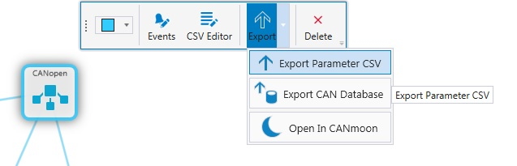

The networks must be configured before parameter CSV can be exported.
|
|
The networks must be configured before parameter CSV can be exported.
|
This function exports a CSV file from parameters of selected network. The CSV file can be used with the Parameters library for HMIs.
The parameter CSV files are exported on System Export. The parameter CSV file name is automatically generated on System Export to the project directory with the network name. All the project's networks are saved as separate .csv files.
To manually export the parameter CSV:
Select a network
Select Export > Export Parameter CSV from the hover menu

Browse to the location and select OK.
Epec Oy reserves all rights for improvements without prior notice.
Source file 6_6_Export_Parameter_CSV.htm
Last updated 25-Jun-2025